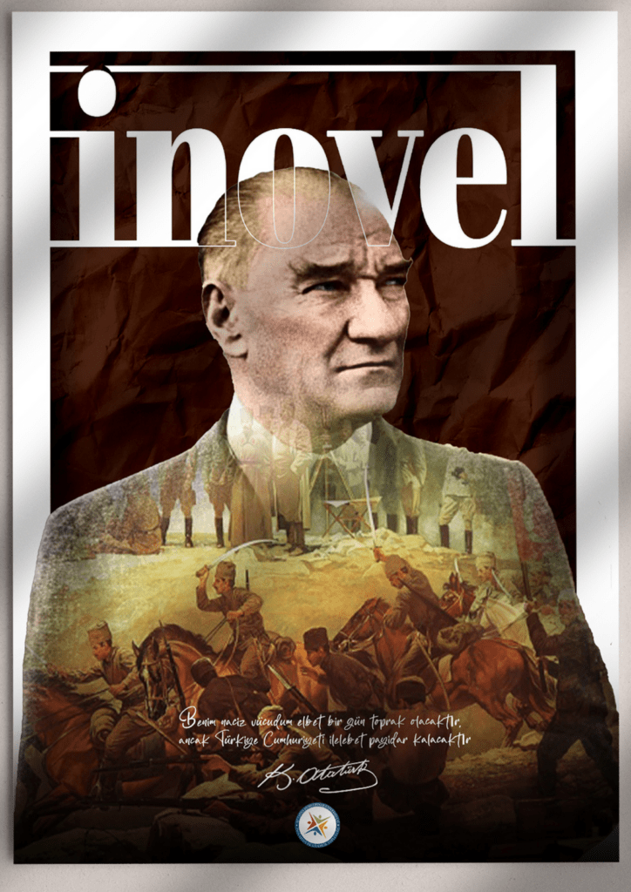

İNOVEL DERGİ / 2023
2023 Yaz Sezonu
Birçok konuda değindiğimiz 2023 yaz sezonu dergisi.
← Tüm dergilere dönDERGİYİ OKU
Görüntülenmezse PDF’yi yeni sekmede açabilirsin ↗

İNOVEL DERGİ / 2023
Birçok konuda değindiğimiz 2023 yaz sezonu dergisi.
← Tüm dergilere dönGörüntülenmezse PDF’yi yeni sekmede açabilirsin ↗